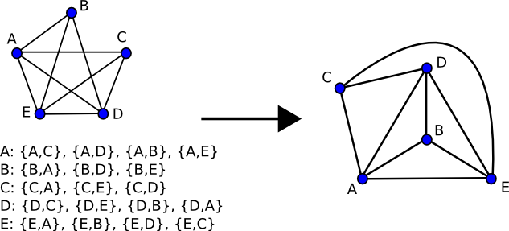

A graph is planar if it can
be drawn in two-dimensional space without any of its edges crossing. Such a
drawing of a planar graph is called a
plane drawing. Each
plane drawing belongs to an equivalence class called a planar embedding
[1] that is defined by the clockwise ordering of adjacent
edges around each vertex in the graph. A planar embedding is a convenient
intermediate representation of an actual drawing of a planar graph, and many
planar graph drawing algorithms are formulated as functions mapping a planar
embedding to a plane drawing.
|  |
The function boyer_myrvold_planarity_test implements the planarity testing/embedding algorithm of Boyer and Myrvold [70]. boyer_myrvold_planarity_test returns true if the input graph is planar and false otherwise. As a side-effect of this test, a planar embedding can be constructed if the graph is planar or a minimal set of edges that form a Kuratowski subgraph can be found if the graph is not planar. boyer_myrvold_planarity_test uses named parameter arguments (courtesy of the Boost.Parameter library) to specify what the function actually does. Some examples are:
bool is_planar = boyer_myrvold_planarity_test(g);
if (boyer_myrvold_planarity_test(boyer_myrvold_params::graph = g,
boyer_myrvold_params::embedding = embedding_pmap,
boyer_myrvold_params::kuratowski_subgraph = out_itr
)
)
{
//do something with the embedding in embedding_pmap
}
else
{
//do something with the kuratowski subgraph output to out_itr
}
The parameters passed to boyer_myrvold_planarity_test in the examples above do more than just carry the data structures used for input and output - the algorithm is optimized at compile time based on which parameters are present. A complete list of parameters accepted and their interactions are described below.
boyer_myrvold_planarity_test accepts as input any undirected graph, even those with self-loops and multiple edges. However, many planar graph drawing algorithms make additional restrictions on the structure of the input graph - for example, requiring that the input graph is connected, biconnected, or even maximal planar (triangulated.) Fortunately, any planar graph on n vertices that lacks one of these properties can be augmented with additional edges so that it satisfies that property in O(n) time - the functions make_connected, make_biconnected_planar, and make_maximal_planar exist for this purpose. If the graph drawing algorithm you're using requires, say, a biconnected graph, then you must make your input graph biconnected before passing it into boyer_myrvold_planarity_test so that the computed planar embedding includes these additional edges. This may require more than one call to boyer_myrvold_planarity_test depending on the structure of the graph you begin with, since both make_biconnected_planar and make_maximal_planar require a planar embedding of the existing graph as an input parameter.
The named parameters accepted by boyer_myrvold_planarity_test are:
If the graph is planar, a planar embedding can be produced. The planar embedding can be verified by passing it to a plane drawing routine (such as chrobak_payne_straight_line_drawing) and using the function is_straight_line_drawing to verify that the resulting graph is planar.
If the graph is not planar, a set of edges that forms a Kuratowski subgraph in the original graph can be produced. This set of edges can be passed to the function is_kuratowski_subgraph to verify that they can be contracted into a K5 or K3,3. boyer_myrvold_planarity_test chooses the set of edges forming the Kuratowski subgraph in such a way that the contraction to a K5 or K3,3 can be done by a simple deterministic process which is described in the documentation to is_kuratowski_subgraph.
boost/graph/boyer_myrvold_planar_test.hpp
Any undirected graph. The graph type must be a model of VertexAndEdgeListGraph and IncidenceGraph.OUT PlanarEmbedding embedding
Must model the PlanarEmbedding concept.IN OutputIterator kuratowski_subgraph
An OutputIterator which accepts values of the type graph_traits<Graph>::edge_descriptorIN VertexIndexMap vm
A Readable Property Map that maps vertices from g to distinct integers in the range [0, num_vertices(g) )IN EdgeIndexMap em
Default: get(vertex_index,g)
A Readable Property Map that maps edges from g to distinct integers in the range [0, num_edges(g) )
Default: get(edge_index,g), but this parameter is only used if the kuratowski_subgraph_iterator is provided.
[1] A planar embedding is also called a combinatorial
embedding.
[2] The algorithm can still be made to run in time O(n)
for this case, if needed. Euler's
formula implies that a planar graph with n vertices can have no more
than 3n - 6 edges, which means that any non-planar graph on n
vertices has a subgraph of only 3n - 5 edges that contains a Kuratowski
subgraph. So, if you need to find a Kuratowski subgraph of a graph with more
than 3n - 5 edges in time O(n), you can create a subgraph of the
original graph consisting of any arbitrary 3n - 5 edges and pass that
graph to boyer_myrvold_planarity_test.
Copyright © 2007 Aaron Windsor (
aaron.windsor@gmail.com)